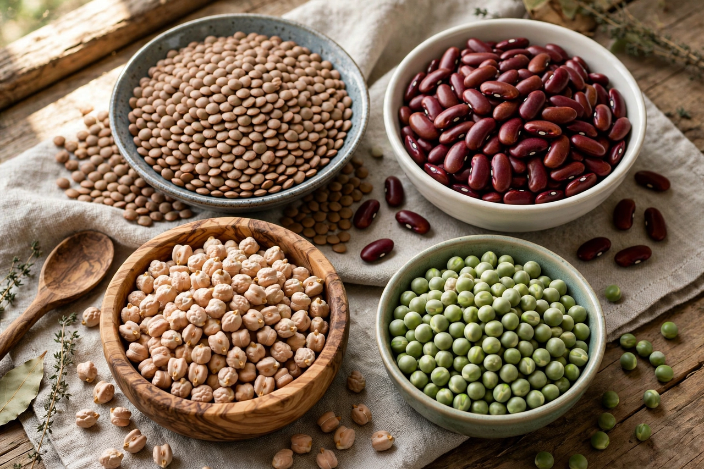

Legume

Family: Fabaceae (Leguminosae)
Examples: Beans, peas, lentils, chickpeas, peanuts, soybeans, tamarind
A legume is a plant in the family Fabaceae (or Leguminosae), or the fruit or seed of such a plant. When used as a dry grain, the seed is also called a pulse. Legumes are grown agriculturally, primarily for human food, livestock forage and silage, and as soil-enhancing green manure. Well-known legumes include beans, peas, lentils, chickpeas, soybeans, peanuts, alfalfa, clover and tamarind.
Nitrogen fixation
Legumes are notable for their ability to fix atmospheric nitrogen through a symbiosis with rhizobium bacteria in root nodules. This makes legume crops valuable in rotations: they enrich the soil with nitrogen and reduce the need for synthetic fertiliser, a key reason legumes have been farmed since the Neolithic alongside cereals.
As food
Pulses are a staple protein source in much of the world, rich in protein, fibre, complex carbohydrates and micronutrients, and are often eaten with cereals whose amino-acid profile complements theirs — as in rice and dal, beans and maize, or hummus and bread. Some legumes must be properly cooked to destroy lectins and other toxins; the peanut is a legume despite its culinary classification as a nut.